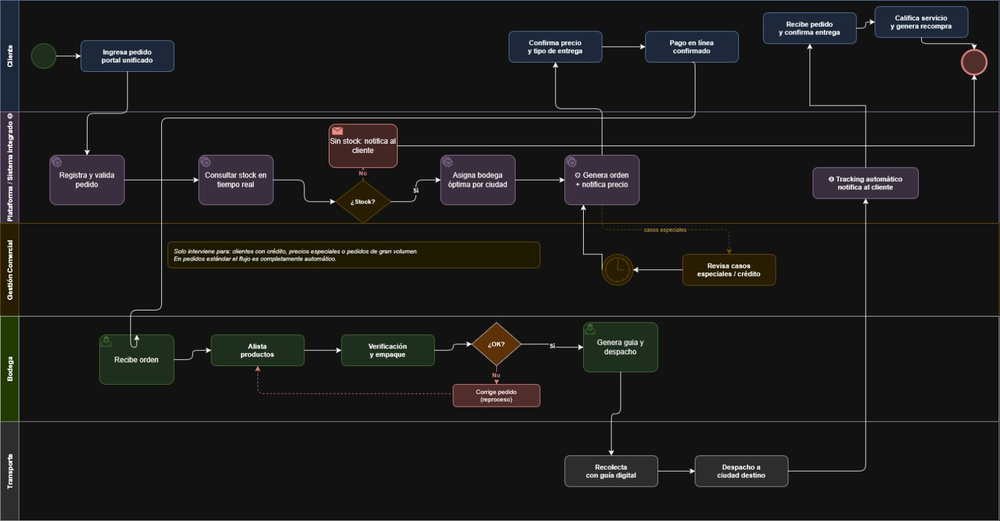

🌐 Portal unificado
Web, app y WhatsApp integrados en un solo canal de pedidos.
Solución propuesta
Diagrama BPMN y descripción del proceso mejorado de logística y despacho.
La solución propuesta consiste en la integración del sistema de pedidos con el inventario multi-sede y la plataforma logística de IPR, permitiendo que las decisiones operativas sean ejecutadas automáticamente por el sistema.
La diferencia clave frente a la compra actual por web: hoy la web funciona como tienda en línea, pero sin integración con el sistema logístico interno. El cliente puede hacer el pedido y pagar, pero la verificación de stock, la asignación de bodega y el seguimiento del despacho continúan siendo manuales. La solución propuesta conecta todos estos pasos en un flujo único automatizado.
Web, app y WhatsApp integrados en un solo canal de pedidos.
Motor de consulta simultánea de inventario en todas las sedes.
Asignación automática según ubicación del cliente y disponibilidad.
Generación digital de orden y guía al confirmar el pago.
Notificaciones automáticas al cliente en cada etapa del trayecto.
Retroalimentación post-entrega como insumo de mejora continua.
Descripción del proceso mejorado con la solución tecnológica integrada:
En el proceso optimizado, el cliente accede a un portal unificado —disponible en web y con integración directa a WhatsApp— desde el cual puede buscar repuestos por código, nombre o categoría y consultar disponibilidad en tiempo real sobre todas las sedes del país de forma simultánea. Si el producto no está disponible en la ciudad más cercana, el sistema lo indica de inmediato y sugiere la sede con stock disponible, eliminando por completo la necesidad de que el cliente espere una respuesta del asesor.
Al agregar los productos al carrito y confirmar el pedido, el sistema verifica el inventario y asigna automáticamente la bodega de origen óptima según la ubicación del cliente y la disponibilidad de stock, priorizando la sede más cercana. Pedidos estándar de pago anticipado no requieren ninguna intervención del asesor comercial; el sistema reconoce el historial del cliente y procesa el pedido de forma autónoma.
Una vez confirmado el pago, la orden de despacho digital se genera de forma automática y llega de inmediato a la interfaz del personal de bodega con todos los datos necesarios: ítems, cantidades, sede de origen, modalidad de entrega y dirección del cliente cuando aplica. El equipo de bodega gestiona el alistamiento desde el sistema, actualizando el estado del pedido en cada etapa sin necesidad de comunicaciones manuales con el área comercial.
Durante el trayecto, el cliente recibe notificaciones automáticas en cada cambio de estado —pedido confirmado, en alistamiento, despachado, en camino y entregado— a través del canal de su preferencia: WhatsApp, correo electrónico o ambos. Ante cualquier novedad durante el transporte, el transportador la registra directamente en el sistema indicando tipo y descripción, lo que activa un flujo de excepción definido: el asesor recibe una alerta, el cliente es notificado, y el sistema ofrece opciones de resolución (reenvío, reembolso o contacto directo), dejando trazabilidad completa de cada caso.
El proceso cierra con una solicitud de calificación que el sistema envía al cliente una hora después de registrada la entrega. Esta retroalimentación queda vinculada al pedido y alimenta un panel de analítica operacional que permite al coordinador logístico identificar cuellos de botella por etapa, sede y ciudad, convirtiendo cada entrega en un insumo de mejora continua para la operación.
Las actividades marcadas con ⚙ son ejecutadas por el sistema integrado sin intervención humana.
